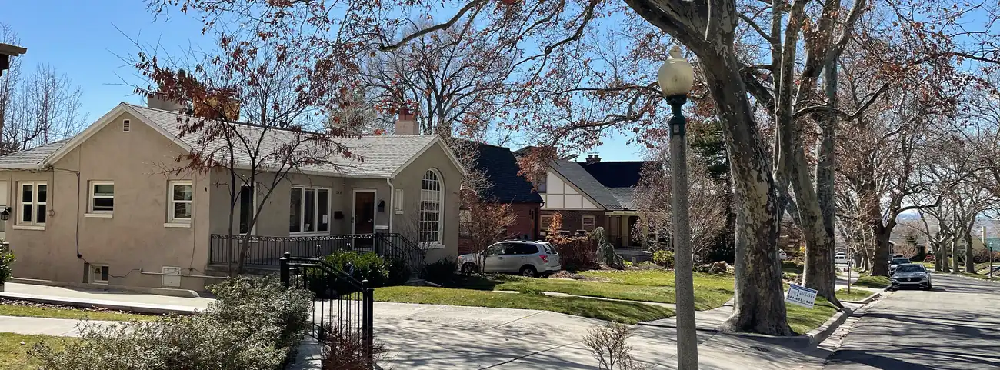
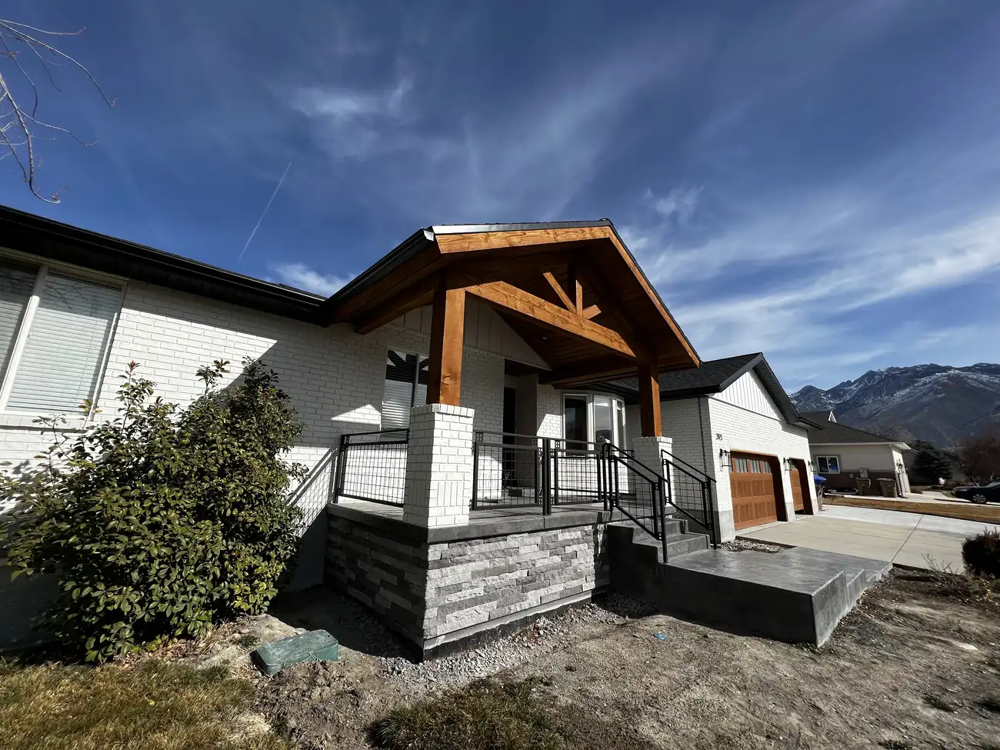
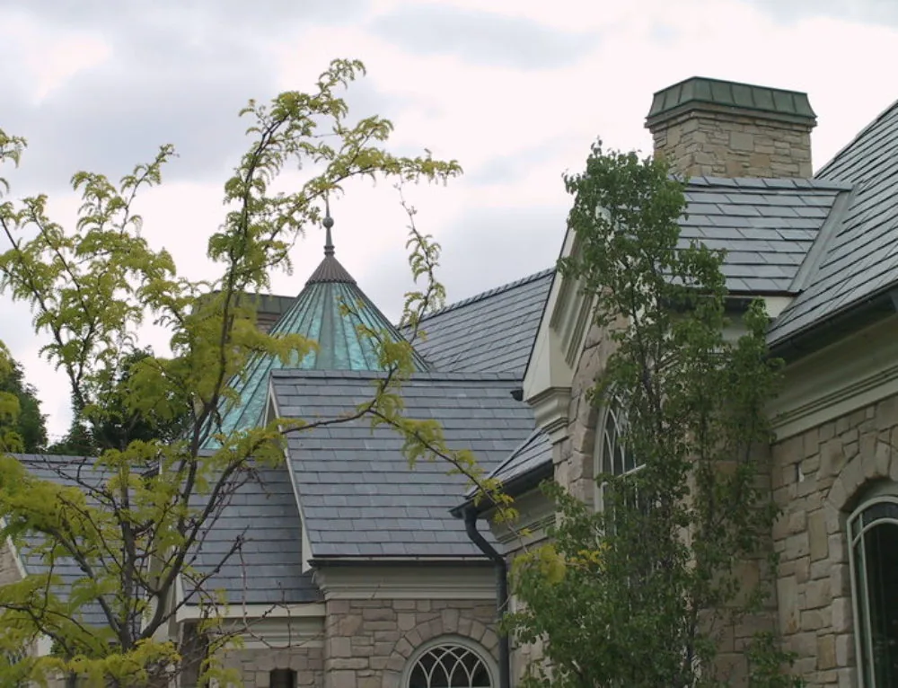
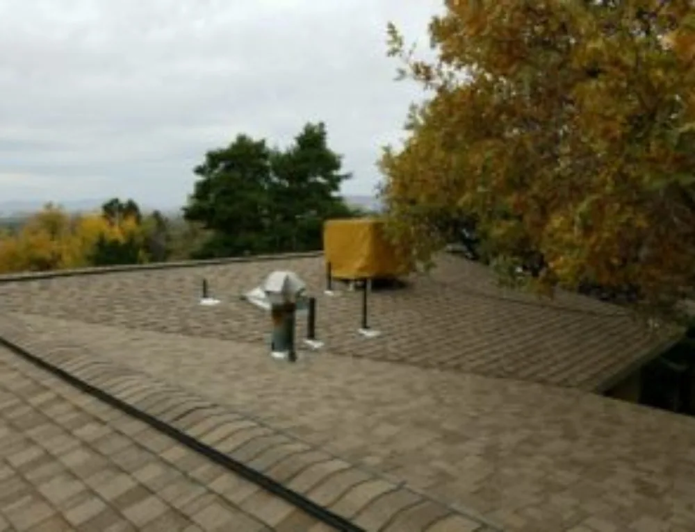
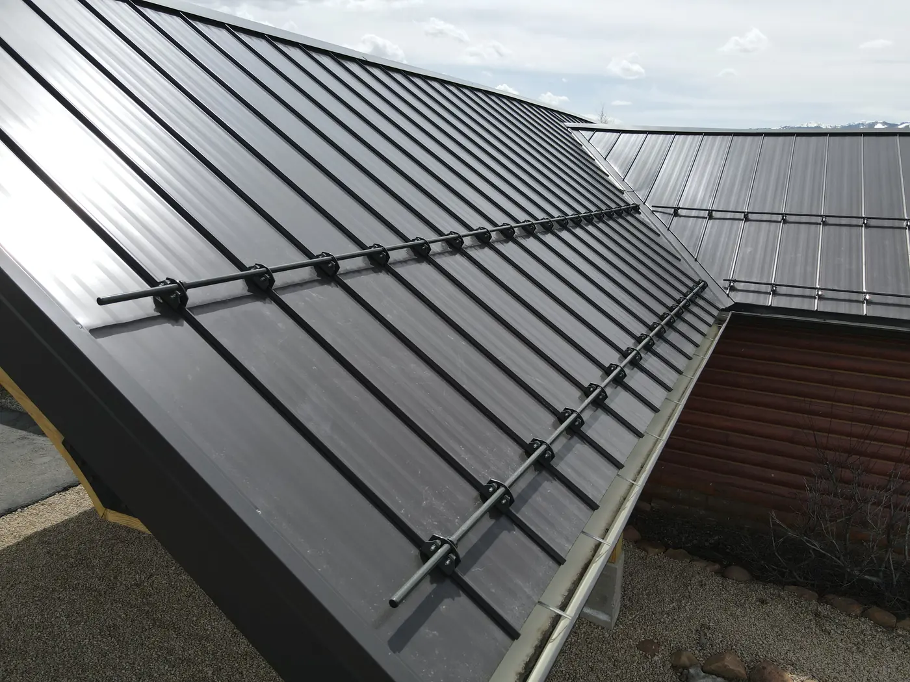
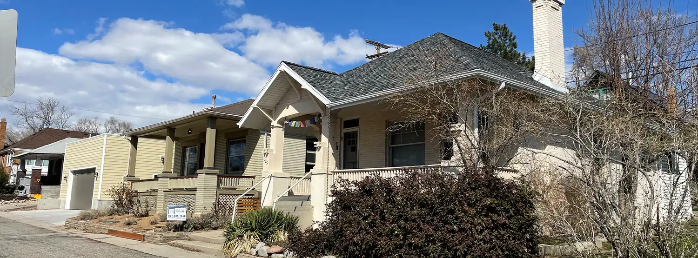
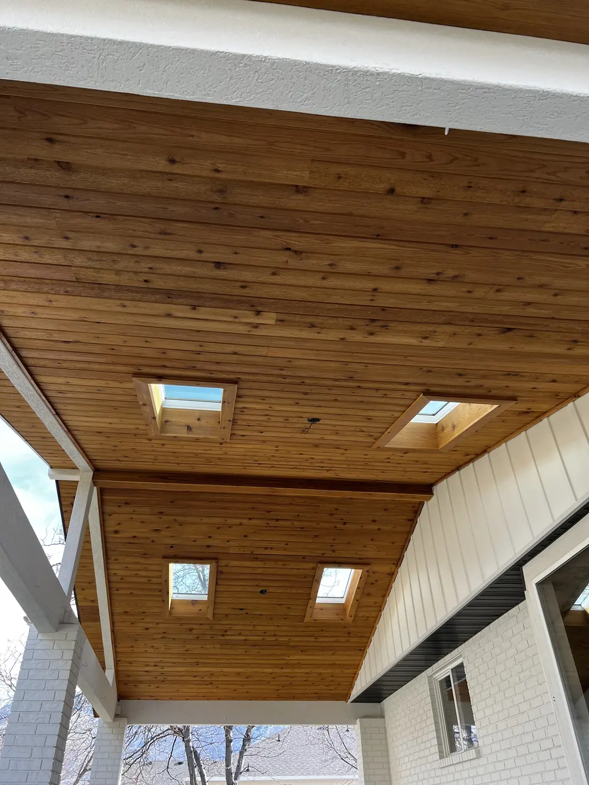
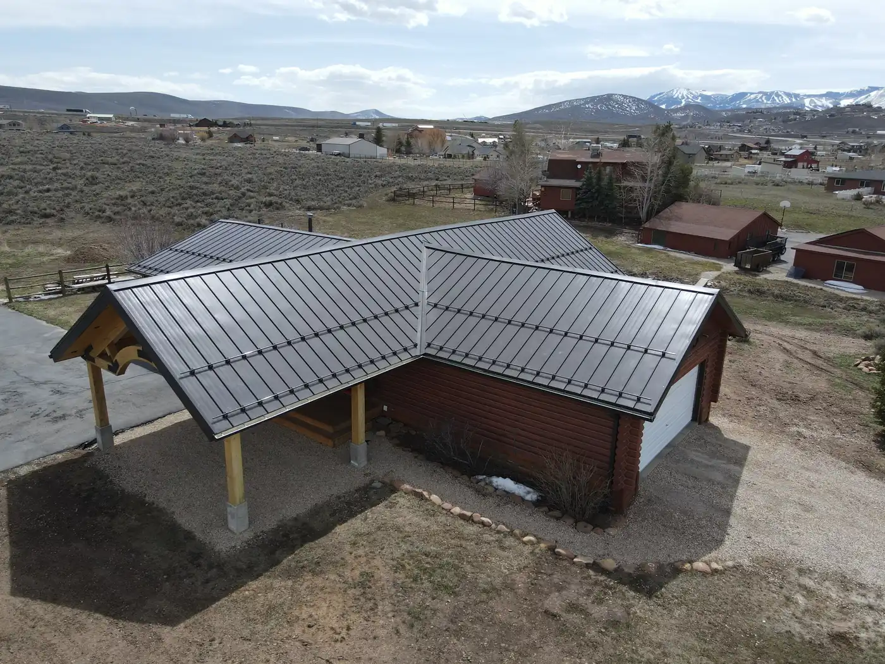

Case file 01 · 2021
The Avenues, Salt Lake City
Membrane and asphalt re-roof
A low-slope membrane section and a new asphalt roof on an Avenues bungalow.
Read the project notes

No. 01 · Salt Lake City · Since 2007
Salt City Roofers is a roofing company in Salt Lake City for homeowners who want to understand their roof: asphalt shingle, synthetic slate and metal roofs, tear-offs and re-sheeting, roof conversions, gutters and copper chimney caps, with labor and material warranties on every project.


Exterior remodel · Draper, Utah

Finished re-roof · the Avenues, Salt Lake City · 2021
Chapter guide
“Educate, plan, execute, wrap it up” is how we’ve described our work for years. Scroll through what each part means on your roof.




I / IV
A 15-minute look on the roof, then a 15-minute conversation about what we found: age, condition, damage, ventilation. You learn what your roof needs before anyone talks price.
Our estimator writes the quote and emails it, so you can read it on your own time: the scope, the system, options most contractors don’t mention, and the warranty.
Tarps and plywood go down to protect the yard, the old roof comes off, soft decking is re-sheeted, and the new system goes on to the manufacturer’s specification.
Debris raked and picked up, a heavy-duty magnet pass for nails, a blower for loose granules, and your labor and material warranty paperwork.
Inside the roof
Every roofing system is built from the deck up: plywood, drip edge, ice and water membrane, underlayment, flashings, the visible roof, the nails that hold it, and the ventilation that lets the attic breathe. Each manufacturer has its own installation practices, and whether the complete system is used affects the warranty.
Asphalt shingle systemsThe work
Steep-slope roofing in asphalt, synthetic slate and metal, plus the exterior work around it: conversions, soffit and fascia, gutters and copper chimney caps.
Case files

Case file 01 · 2021
Membrane and asphalt re-roof
A low-slope membrane section and a new asphalt roof on an Avenues bungalow.
Read the project notes
Case file 02 · 2022
Exterior remodel
A covered porch, craftsman details, new doors and a wood soffit ceiling with skylights on a Draper home.
Read the project notes


Case file 03 · 2022
Snow retention on a metal roof
Snow guards installed on a standing seam metal roof on a Park City home.
Read the project notes
Letters
A very positive experience. Thank you for doing exactly what you said you would do in a timely and professional manner. I am very please with the work and would not hesitate to recommend you to friends and relatives.
Brock was honest, informative, and very friendly throughout the entire process. The crew was on time, cleaned up, was friendly and did a good job. We will definitely recommend Salt City Roofers to others.
We interviewed six different contractors for our roof and hands down wanted Salt City Roofers to do the job! SCR was the recommended choice of the local roofing supply co. They have a great + kind crew + did an awesome job.
Roofing Q&A
About a week from start to finish for most homes, give or take a day or two for weather. It starts with the tear-off and disposal of the old roof; if the decking needs it, we re-sheet before the new system goes on.
Properly installed asphalt shingles are durable and versatile. On low-slope roofs, TPO and PVC membranes are reliable. Metal costs more than asphalt but is a beautiful choice on mountain homes and cabins. We advise against concrete tile here, because freeze-thaw cycles crack it.
Yes. You get a detailed, written explanation of the work, including ventilation, maintenance, gutters and flashing details, plus information on our standard warranties and the manufacturer warranties available.
Usually up to about 45 minutes from Salt Lake City. We’ve worked along the Wasatch Front from Provo and Lehi to Park City and Ogden.
We talk through your landscaping concerns first, lay tarps, move what we can, and use plywood to divert debris away from plants and shrubs.
No-cost inspection & quote
A no-cost roofing inspection and quote: fifteen minutes on the roof, fifteen minutes explaining what we found, and a written quote in your inbox.